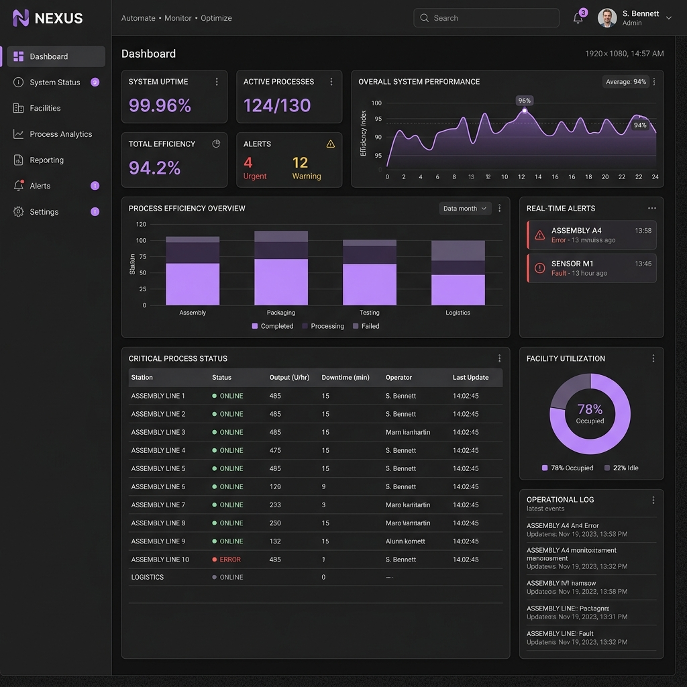
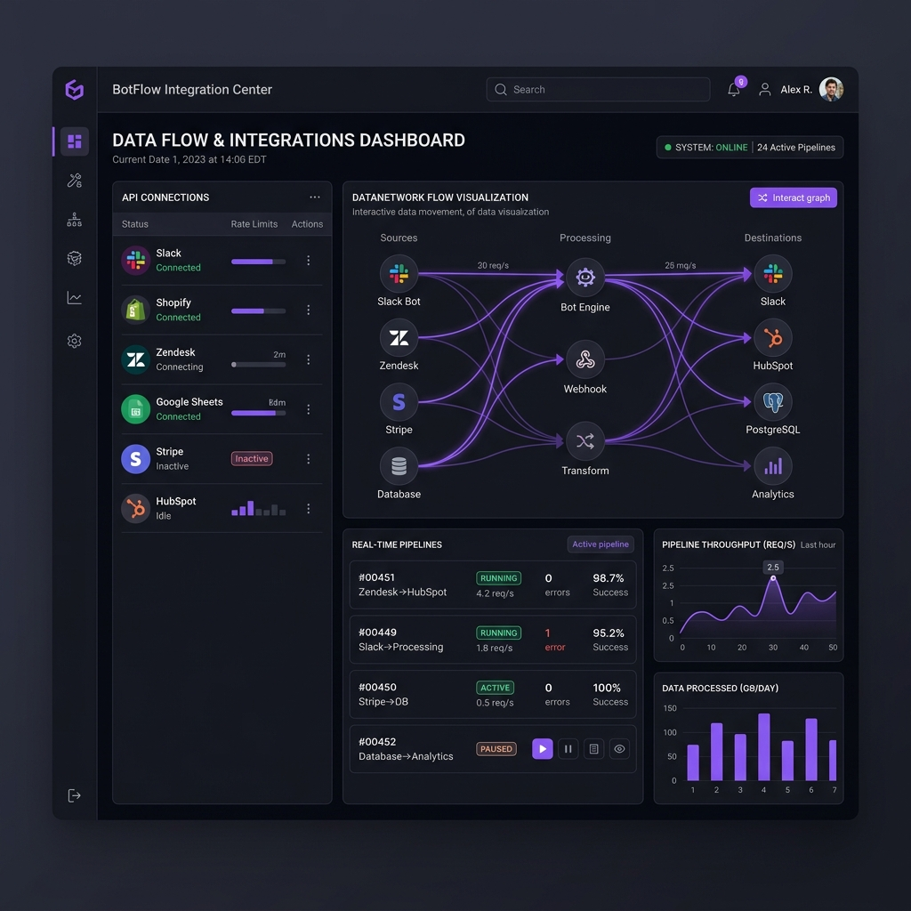
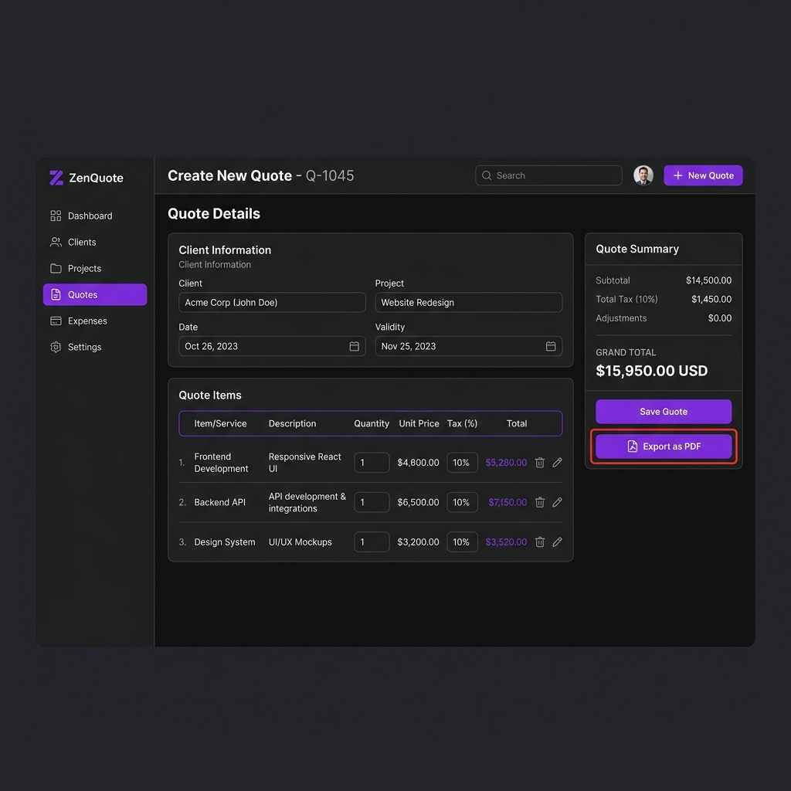

Sistema de Automação Comercial
API backend integrada com rotinas automatizadas, eliminando tarefas manuais e reduzindo erros em 80%.
Java
Spring Boot
MySQL
Transformo problemas e processos em software funcional. Desenvolvo sistemas backend e automações com foco em eficiência, clareza e estrutura.
Sou desenvolvedor de software com foco em backend e automações, orientado à construção de soluções que resolvem problemas reais com clareza e consistência.
Meu interesse por tecnologia começou cedo, passando por experiências com robótica e evoluindo naturalmente para o desenvolvimento de software — onde encontrei afinidade com lógica, estrutura e resolução de problemas complexos.
Adoto uma abordagem analítica: antes de escrever código, busco compreender o problema em profundidade, considerando contexto, limitações e impacto da solução. Isso me permite desenvolver sistemas organizados, funcionais e sustentáveis ao longo do tempo.
Tenho como princípio construir com simplicidade e propósito. Prefiro poucas tecnologias bem dominadas e bem aplicadas do que complexidade desnecessária. Cada decisão técnica é pensada para gerar clareza, eficiência e valor real para quem utiliza o sistema.
Estou em constante evolução, aprofundando meus conhecimentos em backend, arquitetura de sistemas e boas práticas de engenharia, sempre com foco em desenvolver soluções que realmente atendam à dor do usuário.
APIs, microsserviços, lógica de negócio complexa
Processos otimizados, integrações, bots inteligentes
Aplicações completas, do banco à interface

API backend integrada com rotinas automatizadas, eliminando tarefas manuais e reduzindo erros em 80%.

Bot em Python que coleta, normaliza e armazena dados automaticamente, gerando relatórios consolidados.

Sistema web com cálculos automatizados, templates reutilizáveis e exportação em PDF profissional.
Decomponho problemas complexos em partes gerenciáveis antes de escrever qualquer código.
Construo software que resolve necessidades concretas, não demos que impressionam apenas visualmente.
Assimilo novas tecnologias e conceitos com velocidade, adaptando-me ao que o projeto exige.
Cada projeto que entrego é funcional, mantível e projetado para durar além da primeira entrega.
Tem um projeto em mente ou quer discutir uma ideia?
Entre em contato por qualquer um dos canais abaixo.